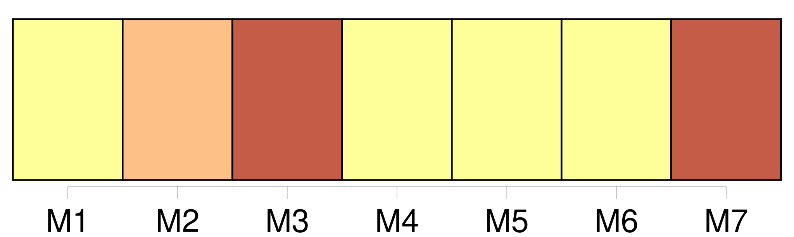
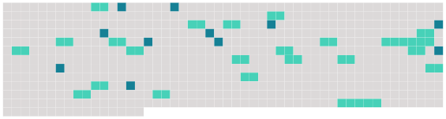

Longueur nb maillons : 33 mentions |
 |
La faculté d'adopter ne pourra être exercée qu'envers [l'individu] à [qui] l'on aura, dans [sa] minorité et pendant six ans au moins, fourni des secours et donné des soins interrompus ou envers celui qui aurait sauvé la vie à l'adoptant, soit dans un combat, soit en le retirant des flammes ou des flots.
Il suffira, dans ce deuxième cas, que l'adoptant soit majeur, plus âgé que [l'adopté] , sans enfans ni descendans légitimes ; et s'il est marié, que son conjoint consente à l'adoption. [1 phrases] L'adoption ne pourra, en aucun cas, avoir lieu avant la majorité de [l'adopté]
Si [l'adopté] , ayant encore [ses] père et mère, ou l'un des deux, n'a point accompli sa vingt-cinquième année, [il] sera tenu de rapporter le consentement donné à l'adoption par [ses] père et mère, ou par le survivant ; et s' [il] est majeur de vingt-cinq ans, de requérir leur conseil. [1 phrases]
L'adoption conférera le nom de l'adoptant à [l'adopté] en l'ajoutant au nom propre de [ce dernier] [1 phrases]
[L'adopté] restera dans [sa] famille naturelle, et y conservera tous [ses] droits : néanmoins le mariage est prohibé [1 phrases]
L'obligation naturelle, qui continuera d'exister entre [l'adopté] et [ses] père et mère, de se fournir des alimens dans les cas déterminés par la loi, sera considérée comme commune à l'adoptant et à [l'adopté] , l'un envers [l'autre] [1 phrases]
[L'adopté] n'acquerra aucun droit de successibilité sur les biens des parens de l'adoptant ; mais [il] aura sur la succession de l'adoptant les mêmes droits que ceux qu'y aurait l'enfant né en mariage même quand il y aurait d'autres enfans de cette dernière qualité nés depuis l'adoption. [1 phrases]
Si [l'adopté] meurt sans descendans légitimes, les choses données par l'adoptant, ou recueillies dans sa succession, et qui existeront en nature lors du décès de [l'adopté] , retourneront à l'adoptant ou à ses descendans, à la charge de contribuer aux dettes, et sans préjudice des droits des tiers.
Le surplus des biens de [l'adopté] appartiendra à [ses] propres parens ; et ceux -ci excluront toujours, pour les objets même spécifiés au présent article, tous héritiers de l'adoptant autres que ses descendans. [1 phrases]
Si du vivant de l'adoptant, et après le décès de [l'adopté] , les enfans ou descendans laissés par [celui -ci] mouraient eux -mêmes sans postérité, l'adoptant succédera aux choses par lui données, comme il est dit en l'article précédent ; mais ce droit sera inhérent à la personne de l'adoptant, et non transmissible à ses héritiers, même en ligne descendante. [3 phrases]
La personne qui se proposera d'adopter, et [celle qui voudra être adoptée] , se présenteront devant le juge de paix du domicile de l'adoptant, pour y passer acte de leurs consentemens respectifs. |
 |
Il est possible de télécharger la ressource sur la page Ortolang |
Si vous avez des questions ou vous voyez des erreurs, merci d'envoyer un mail à silvia.federzoni89@gmail.com |